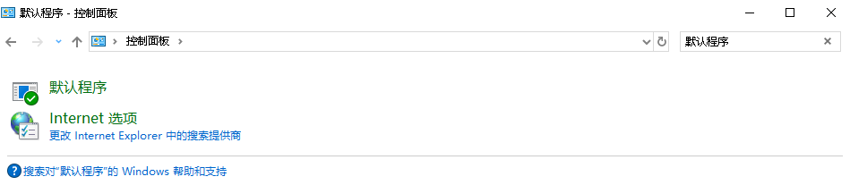
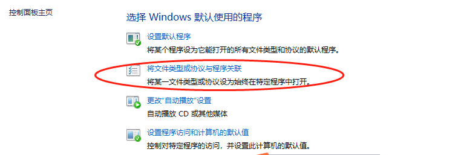
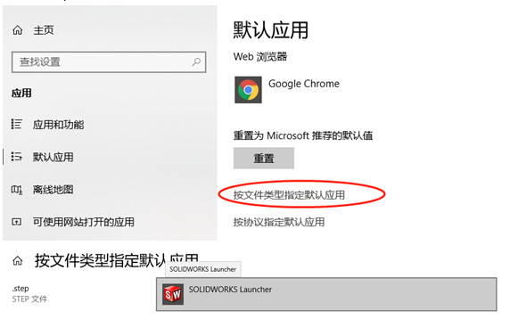
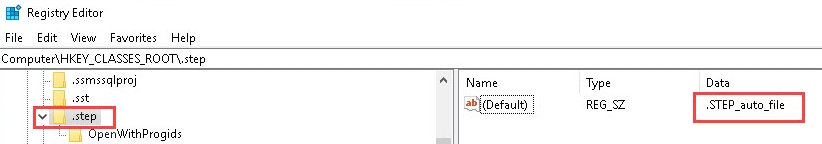

无法在SW打开STEP文件
双击 STEP 文件时，为什么无法在 SOLIDWORKS 应用程序中打开该文件？
方法1：选择启动程序
导致此行为的一个原因是：没有与”.step”文件格式关联的正确打开的 shell。可执行以下步骤解决：
1.打开 Windows® 控制面板。
2.转到”程序”>“默认程序”> 单击”将文件类型或协议与程序关联”。
3.在”默认应用程序”中，单击”按文件类型选择默认应用程序”。
4.找到”.step”格式类型，并确保默认应用程序指定为”SOLIDWORKS Launcher”。
方法2：注册表设置
(注意：错误编辑注册表可能严重损坏操作系统。强烈建议您备份注册表数据，然后再对注册表做出更改。)
在注册表【计算机\HKEY_CLASSES_ROOT.step】中，（默认）值指定为”.STEP_auto_file”。
在注册表【计算机\HKEY_CLASSES_ROOT\.STEP_auto_file\shell\open\command】确保”.STEP_auto_file”存在并具有正确的SOLIDWORKS 应用程序路径，例如：
1 | "C:\\Program Files\\SOLIDWORKS Corp\\SOLIDWORKS\\swShellFileLauncher.exe\" \"%1" |
如果计算机包含这些注册表项的错误数据值，则可以导入随附的”S-078065 step_registry.reg”和”S-078065 和STEP_auto_file_registry.reg”文件来自动重置值。
不相容样条曲线